Розробив: Малярчук В.О.
Час виконання роботи 2 год
Лабораторна робота № 8
Дослідження лінійних схем на операційних підсилювачах (інвертуючого та неінвертуючого підсилювача, суматора, інтегратора, диференціатора)
Ціль роботи
Ціллю роботи є дослідження властивостей лінійних схем на операційних підсилювачах (масштабуючих перетворювачів та аналогових пристроїв).
Методичні вказівки
По літературі і конспекту лекцій вивчити наступні питання:
– операційні підсилювачі та принципові схеми пристроїв створених на їх основі;
– вплив зворотного зв’язку по напрузі на коефіцієнт підсилення пристроїв створених на основі операційних підсилювачів.
Короткі теоретичні відомості
Операційним підсилювачем (ОП) називається підсилювач постійного струму з великим коефіцієнтом підсилення, який виготовляється у вигляді інтегральної мікросхеми і має два входи і один вихід (рис.1).
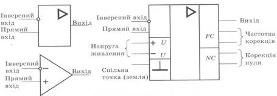
Рис.1. Умовне позначення ОП
ОП мають великий коефіцієнт підсилення, тому застосовуючи різні види та комбінації зворотного зв’язку (ЗЗ), можна отримати пристрої із заданими характеристиками.
Інвертуючий підсилювач (рис. 2). Якщо ОП охопити від’ємним паралельним ЗЗ за напругою, то отриманий таким чином підсилювач матиме коефіцієнт підсилення
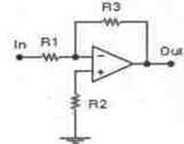 |
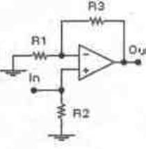 |
Рис.3 Неінвертуючий ОП |
Рис.2. Інвертуючий ОП |
Кп= -R3/ R1 .
Знак мінус показує, що підсилювач змінює на протилежну полярність вихідної напруги відносно вхідної.
Неінвертуючий підсилювач (рис. 3). Якщо ОП охопити від’ємним послідовним зворотним зв’язком за напругою, то отриманий таким чином підсилювач не змінює полярність і фазу підсилювального сигналу. Коефіцієнт підсилення дорівнює.
Кп = 1+R3/ R1.
У суматорі (рис. 4) вихідний сигнал UВИХ пов’язаний з вхідними сигналами UВХ1 , UВХ2 , …, UВХn залежністю Кп =R0 / R1 × UВХ1 + R0 / R2× UВХ2 +… + R0 / RП × UВХП .
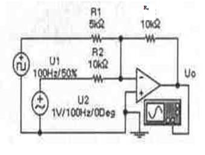
Рис. 4 Схема суматора, що має два входа
На основі ОП можна побудувати майже ідеальні інтегратори (рис. 5). В інтеграторі вихідна напруга Uвих пов'язана з вхідною напругою Uвх наступними співвідношеннями:
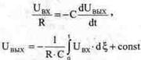
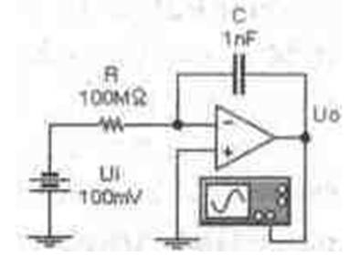
Рис. 5 Схема інтегратора
Диференціатори знаходять застосування як масштабуючі перетворювачі для датчиків з малим вихідним сигналом в умовах сильних промислових перешкод, наприклад, термопар, датчиків місткостей, датчиків біострумів і т.п. Проста схема диференціатора зображена на рис. 6.
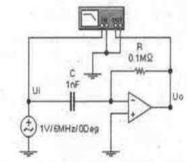
Рис.6. Схема диференціатора
Для схеми диференціатора вихідна напруга Uвих пропорційна швидкості зміни вхідного сигналу і обчислюється по формулі:
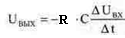
Завдання і порядок виконання роботи
Дослідження масштабуючих перетворювачів (неінвертуючі та інвертуючі підсилювачі).
1. Відкрийте файл Вар_ФКC .xls в відповідності з своїм варіантом випишіть значення величин.
2. Відкрийте файл лаб_8а.ewb (схема зображена на рис.7).
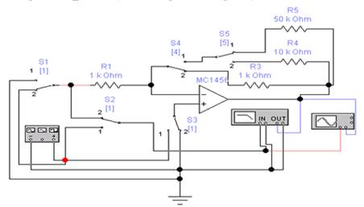
Рис. 7
3. Дослідження робота неінвертуючого підсилювача в режимі посилення синусоїдної напруги:
а) перемикачі S1, S2, S3 клавішею ”1” перевести в положення 1, перемикач S4 клавішею ”4” в положення 2;
б) на генераторі імпульсів виставити напругу 10 мV та частоту в відповідності з варіантом завдання;
в) розрахуйте коефіцієнт посилення напруги Кп підсилювача по заданих значеннях параметрів компонентів схеми;
г) включіть схему, з показів осцилографа та графопобудівника проведіть аналіз підсилюючих можливостей неінвертуючого підсилювача (коефіцієнт посилення напруги, зсув фаз), замалювати отримані результати;
д) виключіть віртуальну установку;
е) перемикачами S4, S5 змінюючи опір зворотного зв’язку проаналізуйте яким чином змінюється коефіцієнт посилення напруги підсилювача, замалюйте отримані результати.
4. Дослідження робота інвертуючого підсилювача в режимі посилення синусоїдної напруги:
а) перемикачі S1, S2, S3 клавішею ”1” перевести в положення 2, перемикач S4 клавішею ”4” в положення 2;
б) виконайте підпункти в) …е), пункту 3.
Дослідження аналогових обчислювальних пристроїв (суматор, інтегратор, диференціатор).
1. Дослідження роботи суматора:
– відкрийте файл лаб_8б.ewb (схема зображена на рис.8).
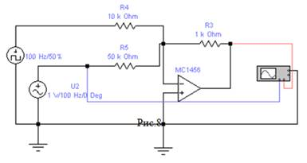
Рис. 8
– виставте значення опорів R3, R4, R5 в відповідності з варіантом завдання;
– включіть віртуальну установку. Підключаючи вхід А осцилографа до генераторів напруг U1 та U2, замалюйте на одній осцилограмі яким чином змінюються в схемі вхідні та вихідна напруги;
– розрахуйте значення коефіцієнта, що зв’язує вихідну напругу з вхідними напругами;
– змінюючи опір зворотного зв’язку в 5, 10 раз проаналізуйте, яким чином зворотній зв’язок впливає на величину вихідного сигналу. Замалюйте отримані осцилограми. Виключіть установку.
2. Дослідження роботи інтегратора та диференціатора:
– відкрийте файл лаб_8с.ewb (схема зображена на рис.9).
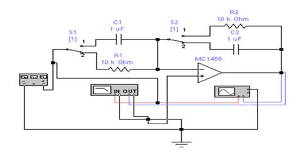
Рис. 9
– виставте частоту генератора в відповідності з варіантом завдання;
– перемикачі S1, S2 клавішею ”1” поставте в положення 2 і проведіть дослідження роботи інтегратора на операційному підсилювачі при подачі на вхід підсилювача синусоїдної, пилоподібної і в вигляді прямокутних імпульсів напруг (осцилограми вхідних та вихідних напруг, АЧХ та ФЧХ), замалюйте отримані результати;
– для дослідження роботи диференціатора перемикачі S1, S2 клавішею ”1” поставте в положення 1, замалюйте отримані результати.
Зміст звіту
Звіт повинен бути оформлений на аркушах паперу й містити:
1.Ціль роботи й номер варіанта.
2.Схеми віртуальних лабораторних установок.
3. Розрахунки та отримані результати при дослідженні лінійних схем на операційних підсилювачах (осцилограми, АЧХ, ФЧХ).
5.Висновки, що базуються на аналізі отриманих результатів.
Контрольні питання
- Що таке операційний підсилювач?
- Що таке експериментальний та теоретичний коефіцієнт підсилення по напругі підсилювача на операційному підсилювачі?
- Що таке АЧХ підсилювача і його граничні частоти?
- Як експериментально визначити граничні частоти підсилювача і полосу пропускання?
- Скільки входів у операційного підсилювача і як вони називаються?
- Що називається інформативним та неінформативним параметрами сигналу?
- Що означає амплітудна характеристика підсилювача?
- Як поділяються підсилювачі за формою амплітудно-частотної характеристики?
- Які види оберненого зв’язку застосовують у підсилювачах?
- Як впливає тип зворотного зв’язку на стабільність коефіцієнта підсилення, вхідний та вихідний опір підсилювача?
- Яка структура операційного підсилювача?
- Які перетворення сигналів можна здійснювати за допомогою операційних підсилювачів?
Список літератури
1. Пасинків В.В., Чиркин Л.К. Напівпровідникові прилади. - М.: Вища шк., 1987. - 264с.
2. Андрєєв В.И., Чмут В.П., Ефимец В.Н. Електроніка, керівництво до лабораторних робіт. - К.: КИИГА, 1977. - 60с.
3. Медведенко Б.И., Нікітін А.П. Електронні прилади. Лабораторні роботи 1-1- 8. - К.: КИИГА, 1993. - 85с.